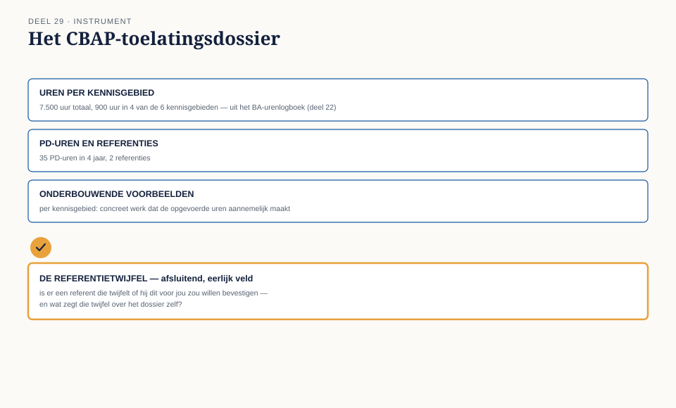

Deel 29 — CBAP-examentraining: casusmarathon en het toelatingsdossier
Slidedeck · Ductus-cursus Business-analyse · niveau 3 · deel 29 van 30 · 20 slides
Slide 1 — Titel
Business-analyse — deel 29 CBAP-examentraining: casusmarathon en het toelatingsdossier
Slide 2 — Het CBAP-examen
7.500 uur in 10 jaar · 900 uur in 4 van de 6 KA’s, samen ≥3.600 35 PD-uren in 4 jaar · 2 referenties 120 vragen · 210 minuten · casusgedreven
Slide 3 — De blauwdrukweging
RADD 30% · Strategy Analysis 15% · RLCM 15% BAPM 14% · Solution Evaluation 14% · E&C 12%
Precies het zwaartepunt van dit niveau.
Slide 4 — Engels en Japans
Anders dan CCBA en ECBA: het CBAP-examen is beschikbaar in twee talen.
Slide 5 — Casusgedreven, niet losse situaties
Een lang scenario. Meerdere onderling verwante vragen.
Slide 6 — Twee vaardigheden
Relevante details onderscheiden van afleiders Vasthouden aan wat het scenario zegt — niet aanvullen met wat waarschijnlijk zou zijn
Slide 7 — [Caselet 1]
Regionale logistiek — drie landen, drie planningsmanieren, een CFO zonder baseline.
Slide 8 — [Vragen 1-5]
Lees het hele scenario eerst.
Slide 9 — [Caselet 2]
Een ziekenhuisnetwerk — “we zoeken de details onderweg wel uit,” en een ongemeld patiëntidentificatierisico.
Slide 10 — [Vragen 6-10]
Lees het hele scenario eerst.
Slide 11 — Het patroon in beide caselets
Eerst een verifieerbare basis. Dan pas doorbouwen. Een risico melden — niet verzwijgen of bagatelliseren.
Slide 12 — Geen toeval
Het zwaartepunt van RADD en SA in de blauwdruk. De rode draad van oordeel en tegenspraak uit deel 28.
Slide 13 — De werkvorm van dit deel
Het CBAP-toelatingsdossier
De zwaardere opvolger van het BA-urenlogboek.
Slide 14 — Strenger dan CCBA
Niet zomaar verspreide uren — 900 uur geconcentreerd in elk van vier kennisgebieden.
Slide 15 — Het blad
Cumulatieve uren · Haalt de drempel? · Vier gekozen gebieden PD-uren · Referenten
Slide 16 — Het veld dat het verschil maakt
Welke referent zou nog twijfelen om te tekenen —
en wat zou je moeten doen om die twijfel weg te nemen?
Slide 17 — Van boekhouding naar zelfreflectie
Een referent tekent niet om de uren — maar omdat hij je werk kan onderschrijven.
Slide 18 —

Het CBAP-toelatingsdossier — met de referentietwijfel als afsluitend veld
Slide 19 — Niet de officiële beoordeling
Een hulpmiddel om te ordenen — raadpleeg voor een echte aanvraag het actuele IIBA-handboek.
Slide 20 — Volgende keer
Alles wat dertig delen hebben opgebouwd, komt samen.
Deel 30: de masterproef — een boardsimulatie over twee dagdelen.